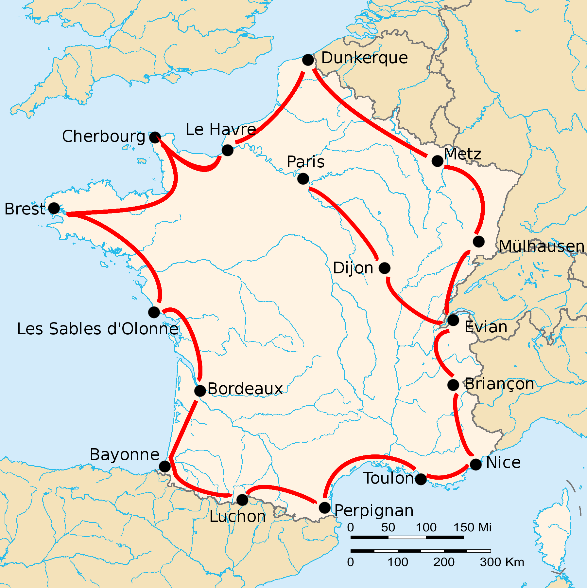

La etepa més dura del Tour de França és la Lucien Buysse, definida per molts com l'etapa més dura de sempre a la història del Tour de França. Aubisque, Tourmalet, Aspin, Peyresourde, els ingredients muntanyencs, els Pirineus. Un trajecte de 326 quilòmetres per unir les localitats de Bayonne i Luchon. Allò que avui seria l'etapa reina.
 Aquesta és la etapa Lucien Buysse.